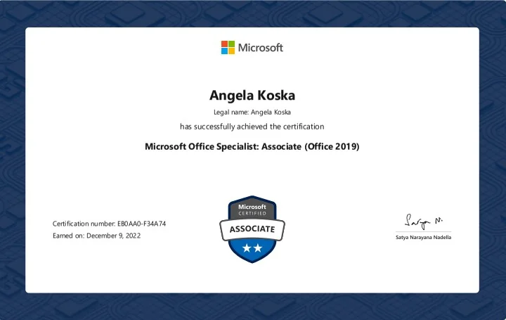

Welcome to My Portfolio!
Welcome to my personal portfolio! I am currently studying Information Technology and learning new skills in web development and computers.

My Journey into IT
I am pursuing an Associate of Science degree in Information Technology. This website will showcase my projects, education, and progress as I learn.
What I'm Learning
I am currently learning HTML, web development, and other important information technology skills.